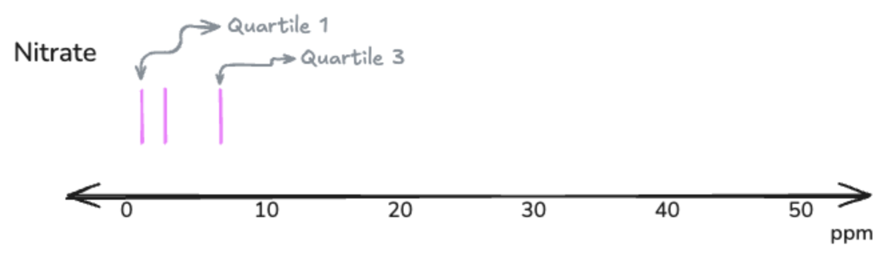
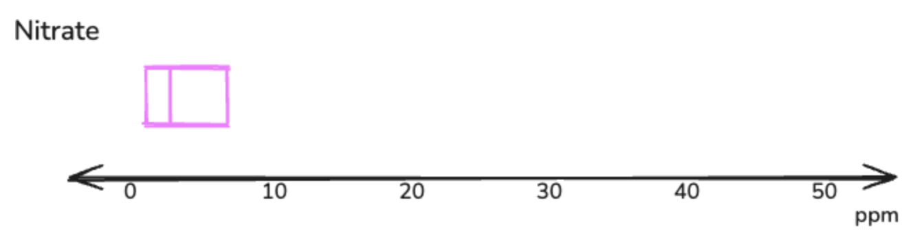
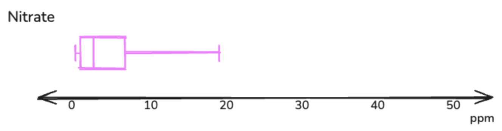

Boxplots and Outliers
Checkpoints on this Page:
Again, replace the placeholder (Line 4) with the CSV URL from your teacher. We need to re-load the class csv data because the webpage doesn’t save variables from page-to-page.
Click the ▶️ Run Code button to run the block.
Visualizing the Data: Boxplots!
A key practice in statistics is to visualize the data! One of the types of plots we can use to do this is a boxplot, sometimes referred to as a box and whisker plot. A boxplot requires that we order the data (as if calculating a median) and then then divide the data into four equal groups (by number of observations), called quartiles.
Activity: Boxplots By Hand
Grab those sticky notes from the nitrates lab! Sort them by sticky color and pass them out to each group, matching the sticky color to the group’s tent color. This will result in each group having a full set of stickies representing the class nitrate data.
Materials Needed:
- 1 Post-It grid paper sheet per group
- 1 poster marker per group
- Your group’s full set of stickies (including those collected from other groups) from the nitrate lab
- After your groups has received all of its stickies, order your nitrate stickies from least to greatest, in a line across the table/desk.

- Find the median (middle number) for the nitrates data.

- At your desk, you will find a large sheet of gridded Post-It paper. The paper has an axis already drawn for the nitrate boxplot. Draw the median line for the nitrate boxplot. The median line will form the center of the boxplot.

- Now, we need to find the first and third quartiles for the nitrites data. To do this, take the bottom half of the data and, similar to finding the median, find the middle number. This is the first quartile. Finding the middle number of the upper half of the data will give you the third quartile.


- Draw the line for the first and third quartiles for the nitrates data.

- Connect the first and third quartiles to the median line with horizontal lines, thereby creating the “box” portion of the boxplot.

- Finally, extend a horizontal line from the first quartile to the minimum value. Draw another horizontal line from the third quartile to the maximum value. These lines form the “whiskers” of the boxplot.

Boxplots By Python
Whew! That was a lot of work. Wouldn’t it be great if Python could do it for us? Good news. It can!
Class Nitrate Boxplot
Click the ▶️ Run Code button to run the block and create a boxplot for the class nitrate data.
Class Nitrite Boxplot
Click the ▶️ Run Code button to run the block and create a boxplot for the class nitrite data.
Outliers
Outliers are data points that are very different from the rest of your data. They’re the “weird” numbers that don’t fit the pattern. Outliers can really change your statistics—like mean and standard deviation. On boxplots, outliers are represented by a circle (or sometimes a star) beyond the whiskers.
If so, the data contains outliers! Python will automatically detect outliers and mark them with a circle.
Why Do Outliers Happen?
Outliers can happen for different reasons:
- Buoy Malfunction 🔧
- The buoy glitched or needs calibration
- The buoy’s solar panels are not supplying enough power
- The buoy was moved or knocked around
- Real Pollution Event 🚨
- Factory dumped chemicals into the stream
- Farm fertilizer washed in after a storm
- Sewage spill
- Natural Event 🌧️
- Heavy rain changed water chemistry
- Algae bloom
- Seasonal variation
Your job as a scientist: Figure out which reason it is!